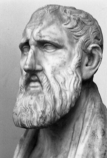

c. 334-262 BC · How to Live
← The philosophy map · About Zeno
When something goes wrong that you can't change, is it better to fight it or to accept it?
Your flight is cancelled. The man next to you shouts at the airline staff for twenty minutes, but the flight is still cancelled. You could shout too, or you could find a café, call home and book the next flight. Around 2,300 years ago, a merchant who lost everything at sea built a whole philosophy on that second choice.
Read one part at a time. After each part, close your eyes and answer the question before you check.
Zeno was born around 334 BC in Citium, a town on the island of Cyprus. He became a merchant, sailing across the Mediterranean to buy and sell goods. Around 312 BC, on a trading voyage, his ship was wrecked near Athens. He lost his cargo and his fortune, and arrived in the city with nothing. Later he said, 'I made a good voyage when I suffered shipwreck,' because the disaster led him to philosophy.
Why did Zeno call his shipwreck a 'good voyage'?
According to an old story, Zeno sat down in a bookshop in Athens and started reading a book about Socrates. He was amazed, and asked where he could find men like that. At that moment the Cynic philosopher Crates walked past, and the bookseller said, 'Follow that man.' Zeno did. He studied with Crates and other teachers for years, learning to live simply and to think hard about how to live well.
Who was Zeno's first teacher, and how did he find him?
Around 300 BC, Zeno began teaching in the centre of Athens, at a long covered walkway called the Painted Porch, or Stoa, because its walls showed famous paintings of battles. Anyone could come and listen. His followers were called Stoics, after the place. Zeno taught that we should live by reason, and calmly accept what we cannot control. He died in Athens around 262 BC, and millions of people still read the Stoics today.
Why are Zeno's followers called Stoics?
Each word is hidden in a sentence. Read it aloud and say what you think the bold word means. Then reveal and compare.
Which of these are up to you, and which are not? Decide together, then reveal.
Now you: explain Zeno's Stoic idea to a friend who is angry about a cancelled holiday. Speak for about a minute. Use the starters if they help.
Imagine there is a switch in your head. If you turn it on, you will never again feel angry or upset about things you can't control: traffic, illness, other people's choices. But you will also feel things less strongly in general: less anger at injustice, less excitement when you win.
Tap two cards. Use the timer to keep going, and use at least two of the phrases above.
No looking back. Answer from memory first, then check.
According to Epicurus, what is the secret of a happy life?
What is Aristotle's golden mean?
What did Parmenides argue about change, and why?
From memory, out loud. Then check.
1. What was Zeno's main lesson about things we can't change?
2. How did Zeno arrive in Athens?
3. Why are his followers called Stoics?
4. What does 'setback' mean? Give an example.